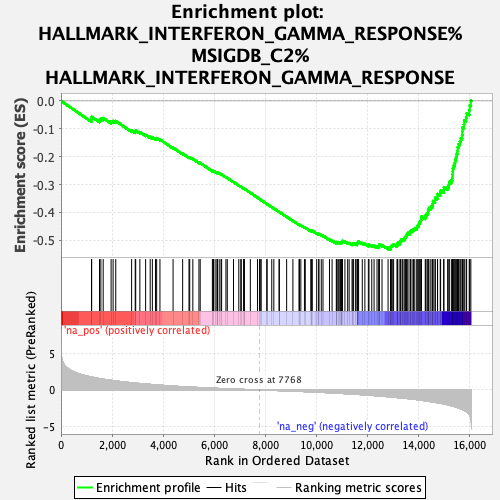

| | | Dataset | rankings |
| Phenotype | NoPhenotypeAvailable |
| Upregulated in class | na_neg |
| GeneSet | HALLMARK_INTERFERON_GAMMA_RESPONSE%MSIGDB_C2%HALLMARK_INTERFERON_GAMMA_RESPONSE |
| Enrichment Score (ES) | -0.53301704 |
| Normalized Enrichment Score (NES) | -2.2681406 |
| Nominal p-value | 0.0 |
| FDR q-value | 1.828735E-4 |
| FWER p-Value | 0.001 |
Table: GSEA Results Summary

Fig 1: Enrichment plot: HALLMARK_INTERFERON_GAMMA_RESPONSE%MSIGDB_C2%HALLMARK_INTERFERON_GAMMA_RESPONSE
Profile of the Running ES Score & Positions of GeneSet Members on the Rank Ordered List
| PROBE | GENE SYMBOL | GENE_TITLE | RANK IN GENE LIST | RANK METRIC SCORE | RUNNING ES | CORE ENRICHMENT | | 1 | SRI | | | 1194 | 1.743 | -0.0659 | No |
| 2 | CMKLR1 | | | 1201 | 1.735 | -0.0571 | No |
| 3 | IFITM3 | | | 1508 | 1.537 | -0.0682 | No |
| 4 | PSMA2 | | | 1561 | 1.514 | -0.0635 | No |
| 5 | ISOC1 | | | 1652 | 1.462 | -0.0614 | No |
| 6 | NUP93 | | | 1962 | 1.304 | -0.0740 | No |
| 7 | LGALS3BP | | | 2040 | 1.274 | -0.0721 | No |
| 8 | TXNIP | | | 2144 | 1.221 | -0.0721 | No |
| 9 | IFI27 | | | 2765 | 0.970 | -0.1060 | No |
| 10 | ST3GAL5 | | | 2906 | 0.920 | -0.1099 | No |
| 11 | BPGM | | | 2925 | 0.915 | -0.1062 | No |
| 12 | CASP7 | | | 3088 | 0.869 | -0.1118 | No |
| 13 | PSME2 | | | 3313 | 0.798 | -0.1217 | No |
| 14 | RNF31 | | | 3492 | 0.749 | -0.1289 | No |
| 15 | PSME1 | | | 3577 | 0.725 | -0.1304 | No |
| 16 | SERPING1 | | | 3699 | 0.693 | -0.1343 | No |
| 17 | LY6E | | | 3745 | 0.678 | -0.1336 | No |
| 18 | SSPN | | | 3874 | 0.645 | -0.1382 | No |
| 19 | CFH | | | 4388 | 0.516 | -0.1678 | No |
| 20 | PLA2G4A | | | 4763 | 0.435 | -0.1890 | No |
| 21 | IRF2 | | | 5011 | 0.390 | -0.2025 | No |
| 22 | TNFSF10 | | | 5040 | 0.386 | -0.2022 | No |
| 23 | PTPN1 | | | 5162 | 0.363 | -0.2079 | No |
| 24 | USP18 | | | 5401 | 0.321 | -0.2212 | No |
| 25 | TRIM26 | | | 5450 | 0.314 | -0.2225 | No |
| 26 | IRF5 | | | 5927 | 0.232 | -0.2513 | No |
| 27 | SPPL2A | | | 5951 | 0.228 | -0.2515 | No |
| 28 | SAMHD1 | | | 5970 | 0.225 | -0.2514 | No |
| 29 | BST2 | | | 6034 | 0.216 | -0.2543 | No |
| 30 | ARL4A | | | 6109 | 0.203 | -0.2578 | No |
| 31 | METTL7B | | | 6118 | 0.202 | -0.2573 | No |
| 32 | EIF2AK2 | | | 6125 | 0.201 | -0.2566 | No |
| 33 | UBE2L6 | | | 6194 | 0.193 | -0.2598 | No |
| 34 | C1R | | | 6265 | 0.182 | -0.2633 | No |
| 35 | P2RY14 | | | 6289 | 0.177 | -0.2638 | No |
| 36 | IFIT1 | | | 6458 | 0.151 | -0.2736 | No |
| 37 | IFITM2 | | | 6511 | 0.144 | -0.2761 | No |
| 38 | ZNFX1 | | | 6754 | 0.113 | -0.2907 | No |
| 39 | RTP4 | | | 6962 | 0.089 | -0.3033 | No |
| 40 | CD38 | | | 7041 | 0.079 | -0.3078 | No |
| 41 | TDRD7 | | | 7058 | 0.077 | -0.3084 | No |
| 42 | LAP3 | | | 7149 | 0.066 | -0.3137 | No |
| 43 | EIF4E3 | | | 7175 | 0.063 | -0.3149 | No |
| 44 | LATS2 | | | 7178 | 0.063 | -0.3147 | No |
| 45 | WARS | | | 7413 | 0.036 | -0.3293 | No |
| 46 | HERC6 | | | 7693 | 0.006 | -0.3468 | No |
| 47 | HIF1A | | | 7771 | -0.000 | -0.3516 | No |
| 48 | TRIM21 | | | 7823 | -0.006 | -0.3548 | No |
| 49 | VAMP8 | | | 7834 | -0.007 | -0.3554 | No |
| 50 | SOD2 | | | 8058 | -0.030 | -0.3693 | No |
| 51 | CASP3 | | | 8069 | -0.031 | -0.3697 | No |
| 52 | HLA-G | | | 8252 | -0.055 | -0.3809 | No |
| 53 | FGL2 | | | 8333 | -0.064 | -0.3856 | No |
| 54 | OGFR | | | 8538 | -0.090 | -0.3980 | No |
| 55 | LYSMD2 | | | 8549 | -0.092 | -0.3981 | No |
| 56 | IRF7 | | | 8835 | -0.130 | -0.4154 | No |
| 57 | RBCK1 | | | 9080 | -0.162 | -0.4299 | No |
| 58 | SELP | | | 9319 | -0.193 | -0.4438 | No |
| 59 | STAT3 | | | 9337 | -0.195 | -0.4439 | No |
| 60 | TOR1B | | | 9391 | -0.203 | -0.4461 | No |
| 61 | IFNAR2 | | | 9532 | -0.228 | -0.4537 | No |
| 62 | ISG15 | | | 9564 | -0.232 | -0.4544 | No |
| 63 | PSMB10 | | | 9788 | -0.270 | -0.4670 | No |
| 64 | NCOA3 | | | 9791 | -0.271 | -0.4657 | No |
| 65 | CD274 | | | 9823 | -0.275 | -0.4662 | No |
| 66 | MTHFD2 | | | 9834 | -0.276 | -0.4654 | No |
| 67 | TNFAIP2 | | | 10011 | -0.305 | -0.4749 | No |
| 68 | NOD1 | | | 10090 | -0.317 | -0.4781 | No |
| 69 | APOL6 | | | 10098 | -0.319 | -0.4768 | No |
| 70 | HLA-A | | | 10191 | -0.335 | -0.4809 | No |
| 71 | CD40 | | | 10258 | -0.345 | -0.4832 | No |
| 72 | CD74 | | | 10512 | -0.389 | -0.4971 | No |
| 73 | PNPT1 | | | 10614 | -0.407 | -0.5013 | No |
| 74 | SLC25A28 | | | 10779 | -0.438 | -0.5093 | No |
| 75 | PSMA3 | | | 10801 | -0.440 | -0.5083 | No |
| 76 | B2M | | | 10804 | -0.440 | -0.5061 | No |
| 77 | IRF8 | | | 10859 | -0.452 | -0.5071 | No |
| 78 | GBP4 | | | 10915 | -0.462 | -0.5081 | No |
| 79 | CMPK2 | | | 10947 | -0.469 | -0.5075 | No |
| 80 | MX1 | | | 10991 | -0.479 | -0.5077 | No |
| 81 | TAPBP | | | 10993 | -0.480 | -0.5052 | No |
| 82 | HLA-DMA | | | 11000 | -0.480 | -0.5031 | No |
| 83 | PFKP | | | 11022 | -0.485 | -0.5018 | No |
| 84 | MARCH1 | | | 11117 | -0.505 | -0.5051 | No |
| 85 | OAS3 | | | 11224 | -0.526 | -0.5090 | No |
| 86 | AUTS2 | | | 11282 | -0.537 | -0.5097 | No |
| 87 | MT2A | | | 11396 | -0.563 | -0.5138 | No |
| 88 | JAK2 | | | 11429 | -0.570 | -0.5128 | No |
| 89 | HLA-B | | | 11447 | -0.574 | -0.5109 | No |
| 90 | IDO1 | | | 11527 | -0.590 | -0.5127 | No |
| 91 | IFI44 | | | 11592 | -0.603 | -0.5136 | No |
| 92 | OAS2 | | | 11596 | -0.604 | -0.5105 | No |
| 93 | RIPK2 | | | 11614 | -0.609 | -0.5084 | No |
| 94 | TNFAIP6 | | | 11626 | -0.611 | -0.5059 | No |
| 95 | ST8SIA4 | | | 11652 | -0.617 | -0.5042 | No |
| 96 | EPSTI1 | | | 11796 | -0.647 | -0.5097 | No |
| 97 | PML | | | 11898 | -0.668 | -0.5126 | No |
| 98 | VAMP5 | | | 12034 | -0.699 | -0.5174 | No |
| 99 | NFKB1 | | | 12059 | -0.706 | -0.5151 | No |
| 100 | IFI44L | | | 12168 | -0.739 | -0.5180 | No |
| 101 | SP110 | | | 12258 | -0.766 | -0.5196 | No |
| 102 | PSMB2 | | | 12374 | -0.802 | -0.5226 | No |
| 103 | C1S | | | 12441 | -0.821 | -0.5224 | No |
| 104 | PELI1 | | | 12459 | -0.825 | -0.5191 | No |
| 105 | PSMB9 | | | 12464 | -0.828 | -0.5149 | No |
| 106 | IL10RA | | | 12569 | -0.855 | -0.5170 | No |
| 107 | PLSCR1 | | | 12806 | -0.925 | -0.5269 | No |
| 108 | TRAFD1 | | | 12904 | -0.951 | -0.5280 | Yes |
| 109 | NFKBIA | | | 12907 | -0.954 | -0.5231 | Yes |
| 110 | CMTR1 | | | 12935 | -0.963 | -0.5197 | Yes |
| 111 | BATF2 | | | 12970 | -0.973 | -0.5166 | Yes |
| 112 | DDX60 | | | 13023 | -0.992 | -0.5147 | Yes |
| 113 | VCAM1 | | | 13158 | -1.040 | -0.5176 | Yes |
| 114 | IRF9 | | | 13171 | -1.043 | -0.5128 | Yes |
| 115 | NAMPT | | | 13188 | -1.051 | -0.5083 | Yes |
| 116 | IL15 | | | 13274 | -1.080 | -0.5079 | Yes |
| 117 | IL15RA | | | 13285 | -1.082 | -0.5028 | Yes |
| 118 | IFIT2 | | | 13309 | -1.091 | -0.4985 | Yes |
| 119 | TRIM14 | | | 13367 | -1.109 | -0.4962 | Yes |
| 120 | GCH1 | | | 13430 | -1.130 | -0.4941 | Yes |
| 121 | TRIM25 | | | 13467 | -1.141 | -0.4904 | Yes |
| 122 | IL18BP | | | 13494 | -1.149 | -0.4859 | Yes |
| 123 | IRF4 | | | 13524 | -1.157 | -0.4816 | Yes |
| 124 | XAF1 | | | 13550 | -1.168 | -0.4770 | Yes |
| 125 | RSAD2 | | | 13587 | -1.181 | -0.4730 | Yes |
| 126 | MVP | | | 13667 | -1.217 | -0.4715 | Yes |
| 127 | IFI35 | | | 13687 | -1.224 | -0.4663 | Yes |
| 128 | PSMB8 | | | 13746 | -1.244 | -0.4633 | Yes |
| 129 | CASP4 | | | 13804 | -1.272 | -0.4602 | Yes |
| 130 | FAS | | | 13852 | -1.287 | -0.4563 | Yes |
| 131 | PARP12 | | | 13930 | -1.323 | -0.4542 | Yes |
| 132 | DHX58 | | | 13949 | -1.332 | -0.4483 | Yes |
| 133 | PDE4B | | | 14009 | -1.360 | -0.4448 | Yes |
| 134 | BANK1 | | | 14018 | -1.363 | -0.4381 | Yes |
| 135 | PARP14 | | | 14051 | -1.378 | -0.4328 | Yes |
| 136 | LCP2 | | | 14088 | -1.399 | -0.4276 | Yes |
| 137 | CD86 | | | 14106 | -1.405 | -0.4213 | Yes |
| 138 | RAPGEF6 | | | 14114 | -1.408 | -0.4143 | Yes |
| 139 | ARID5B | | | 14262 | -1.478 | -0.4157 | Yes |
| 140 | IL4R | | | 14281 | -1.491 | -0.4089 | Yes |
| 141 | PNP | | | 14333 | -1.518 | -0.4041 | Yes |
| 142 | TNFAIP3 | | | 14372 | -1.538 | -0.3983 | Yes |
| 143 | HELZ2 | | | 14375 | -1.540 | -0.3903 | Yes |
| 144 | IFIH1 | | | 14407 | -1.559 | -0.3840 | Yes |
| 145 | IFIT3 | | | 14481 | -1.603 | -0.3801 | Yes |
| 146 | MYD88 | | | 14537 | -1.633 | -0.3750 | Yes |
| 147 | STAT1 | | | 14558 | -1.642 | -0.3675 | Yes |
| 148 | UPP1 | | | 14565 | -1.645 | -0.3592 | Yes |
| 149 | CDKN1A | | | 14644 | -1.688 | -0.3552 | Yes |
| 150 | IL2RB | | | 14656 | -1.698 | -0.3469 | Yes |
| 151 | HLA-DQA1 | | | 14742 | -1.755 | -0.3429 | Yes |
| 152 | CASP8 | | | 14745 | -1.756 | -0.3338 | Yes |
| 153 | DDX58 | | | 14849 | -1.813 | -0.3306 | Yes |
| 154 | ADAR | | | 14864 | -1.819 | -0.3219 | Yes |
| 155 | CASP1 | | | 14983 | -1.890 | -0.3193 | Yes |
| 156 | HLA-DRB1 | | | 14993 | -1.898 | -0.3098 | Yes |
| 157 | MX2 | | | 15138 | -2.011 | -0.3083 | Yes |
| 158 | ICAM1 | | | 15187 | -2.050 | -0.3004 | Yes |
| 159 | PTGS2 | | | 15202 | -2.070 | -0.2904 | Yes |
| 160 | TAP1 | | | 15284 | -2.143 | -0.2841 | Yes |
| 161 | CSF2RB | | | 15322 | -2.172 | -0.2749 | Yes |
| 162 | SECTM1 | | | 15330 | -2.181 | -0.2638 | Yes |
| 163 | NMI | | | 15338 | -2.188 | -0.2527 | Yes |
| 164 | PIM1 | | | 15345 | -2.192 | -0.2415 | Yes |
| 165 | ITGB7 | | | 15376 | -2.225 | -0.2316 | Yes |
| 166 | SAMD9L | | | 15418 | -2.264 | -0.2222 | Yes |
| 167 | CXCL9 | | | 15433 | -2.286 | -0.2110 | Yes |
| 168 | PTPN6 | | | 15468 | -2.333 | -0.2008 | Yes |
| 169 | BTG1 | | | 15496 | -2.365 | -0.1899 | Yes |
| 170 | CXCL10 | | | 15526 | -2.415 | -0.1790 | Yes |
| 171 | STAT2 | | | 15530 | -2.422 | -0.1664 | Yes |
| 172 | CCL2 | | | 15565 | -2.463 | -0.1555 | Yes |
| 173 | RNF213 | | | 15617 | -2.531 | -0.1453 | Yes |
| 174 | CIITA | | | 15652 | -2.586 | -0.1337 | Yes |
| 175 | FPR1 | | | 15706 | -2.663 | -0.1230 | Yes |
| 176 | CCL5 | | | 15715 | -2.678 | -0.1093 | Yes |
| 177 | PTPN2 | | | 15720 | -2.684 | -0.0953 | Yes |
| 178 | STAT4 | | | 15774 | -2.776 | -0.0840 | Yes |
| 179 | IRF1 | | | 15787 | -2.800 | -0.0699 | Yes |
| 180 | ISG20 | | | 15863 | -2.925 | -0.0591 | Yes |
| 181 | SOCS3 | | | 15882 | -2.960 | -0.0446 | Yes |
| 182 | RIPK1 | | | 15985 | -3.355 | -0.0333 | Yes |
| 183 | IL6 | | | 16002 | -3.423 | -0.0162 | Yes |
| 184 | NLRC5 | | | 16047 | -3.874 | 0.0016 | Yes |
Table: GSEA details [plain text format]
Fig 2: HALLMARK_INTERFERON_GAMMA_RESPONSE%MSIGDB_C2%HALLMARK_INTERFERON_GAMMA_RESPONSE: Random ES distribution
Gene set null distribution of ES for HALLMARK_INTERFERON_GAMMA_RESPONSE%MSIGDB_C2%HALLMARK_INTERFERON_GAMMA_RESPONSE